Complete Results
These results are based on Stanley2017, Alinaghi2018, Bom2019, and Carter2019 data generating mechanisms with the total of 1665 conditions.
Average Performance
Method performance measures are aggregated across all simulated conditions to provide an overall impression of method performance. However, keep in mind that a method with a high overall ranking is not necessarily the “best” method for a particular application. To select a suitable method for your application, consider also non-aggregated performance measures in conditions most relevant to your application. (TODO: add links to non-aggregated data exploration tool)
Methods are compared using condition-wise ranks. Direct comparison using the average bias is not possible because the data generating mechanisms differ in the outcome scale. See the DGM-specific results (or subresults) to see the distribution of bias values on the corresponding outcome scale.
| Rank | Method | Mean Rank | Rank | Method | Mean Rank |
|---|---|---|---|---|---|
| 1 | WAAPWLS-default | 7.185 | 1 | AK-AK2 | 7.241 |
| 2 | AK-AK1 | 7.497 | 2 | WAAPWLS-default | 7.406 |
| 3 | PEESE-default | 7.990 | 3 | AK-AK1 | 7.565 |
| 4 | SM-3PSM | 8.116 | 4 | PEESE-default | 8.166 |
| 5 | PETPEESE-default | 8.254 | 5 | SM-3PSM | 8.216 |
| 6 | RoBMA-PSMA | 8.353 | 6 | RoBMA-PSMA | 8.420 |
| 7 | EK-default | 8.768 | 7 | PETPEESE-default | 8.429 |
| 8 | puniform-star | 8.826 | 8 | EK-default | 8.932 |
| 9 | PET-default | 8.847 | 9 | PET-default | 9.010 |
| 10 | WLS-default | 9.005 | 10 | puniform-star | 9.014 |
| 11 | FMA-default | 9.009 | 11 | WLS-default | 9.259 |
| 12 | SM-4PSM | 9.401 | 12 | FMA-default | 9.263 |
| 13 | trimfill-default | 10.199 | 13 | SM-4PSM | 9.592 |
| 14 | AK-AK2 | 10.745 | 14 | trimfill-default | 10.425 |
| 15 | RMA-default | 11.922 | 15 | RMA-default | 12.182 |
| 16 | puniform-default | 12.339 | 16 | puniform-default | 12.523 |
| 17 | pcurve-default | 12.443 | 17 | pcurve-default | 12.629 |
| 18 | WILS-default | 14.446 | 18 | WILS-default | 14.592 |
| 19 | mean-default | 14.665 | 19 | mean-default | 14.935 |
Methods are compared using condition-wise ranks. Direct comparison using the average RMSE is not possible because the data generating mechanisms differ in the outcome scale. See the DGM-specific results (or subresults) to see the distribution of RMSE values on the corresponding outcome scale.
| Rank | Method | Mean Rank | Rank | Method | Mean Rank |
|---|---|---|---|---|---|
| 1 | AK-AK1 | 6.133 | 1 | AK-AK1 | 6.177 |
| 2 | RoBMA-PSMA | 6.849 | 2 | RoBMA-PSMA | 7.130 |
| 3 | WAAPWLS-default | 7.372 | 3 | WAAPWLS-default | 7.523 |
| 4 | FMA-default | 7.801 | 4 | AK-AK2 | 7.756 |
| 5 | WLS-default | 7.808 | 5 | FMA-default | 7.973 |
| 6 | trimfill-default | 8.314 | 6 | WLS-default | 7.980 |
| 7 | SM-3PSM | 8.679 | 7 | trimfill-default | 8.478 |
| 8 | PEESE-default | 8.689 | 8 | SM-3PSM | 8.852 |
| 9 | puniform-star | 9.559 | 9 | PEESE-default | 8.868 |
| 10 | PETPEESE-default | 9.766 | 10 | puniform-star | 9.724 |
| 11 | RMA-default | 10.205 | 11 | PETPEESE-default | 9.943 |
| 12 | EK-default | 11.024 | 12 | RMA-default | 10.400 |
| 13 | AK-AK2 | 11.105 | 13 | EK-default | 11.177 |
| 14 | PET-default | 11.154 | 14 | PET-default | 11.309 |
| 15 | SM-4PSM | 11.244 | 15 | SM-4PSM | 11.464 |
| 16 | pcurve-default | 11.427 | 16 | pcurve-default | 11.593 |
| 17 | puniform-default | 12.880 | 17 | puniform-default | 13.056 |
| 18 | mean-default | 13.891 | 18 | WILS-default | 14.076 |
| 19 | WILS-default | 13.924 | 19 | mean-default | 14.135 |
| Rank | Method | Value | Rank | Method | Value |
|---|---|---|---|---|---|
| 1 | RoBMA-PSMA | 0.800 | 1 | RoBMA-PSMA | 0.798 |
| 2 | AK-AK2 | 0.795 | 2 | SM-4PSM | 0.760 |
| 3 | SM-4PSM | 0.765 | 3 | puniform-star | 0.733 |
| 4 | puniform-star | 0.733 | 4 | SM-3PSM | 0.728 |
| 5 | SM-3PSM | 0.733 | 5 | AK-AK2 | 0.722 |
| 6 | EK-default | 0.641 | 6 | EK-default | 0.641 |
| 7 | PET-default | 0.620 | 7 | PET-default | 0.620 |
| 8 | AK-AK1 | 0.609 | 8 | AK-AK1 | 0.609 |
| 9 | WAAPWLS-default | 0.582 | 9 | WAAPWLS-default | 0.582 |
| 10 | PETPEESE-default | 0.572 | 10 | PETPEESE-default | 0.572 |
| 11 | trimfill-default | 0.544 | 11 | trimfill-default | 0.543 |
| 12 | PEESE-default | 0.526 | 12 | PEESE-default | 0.526 |
| 13 | puniform-default | 0.484 | 13 | puniform-default | 0.484 |
| 14 | WLS-default | 0.464 | 14 | WLS-default | 0.464 |
| 15 | RMA-default | 0.457 | 15 | RMA-default | 0.457 |
| 16 | mean-default | 0.370 | 16 | mean-default | 0.370 |
| 17 | FMA-default | 0.341 | 17 | FMA-default | 0.341 |
| 18 | WILS-default | 0.255 | 18 | WILS-default | 0.256 |
| 19 | pcurve-default | NaN | 19 | pcurve-default | NaN |
| Rank | Method | Mean Rank | Rank | Method | Mean Rank |
|---|---|---|---|---|---|
| 1 | FMA-default | 0.145 | 1 | FMA-default | 0.145 |
| 2 | WLS-default | 0.259 | 2 | WLS-default | 0.259 |
| 3 | WILS-default | 0.298 | 3 | WILS-default | 0.298 |
| 4 | WAAPWLS-default | 0.314 | 4 | WAAPWLS-default | 0.314 |
| 5 | PEESE-default | 0.315 | 5 | PEESE-default | 0.315 |
| 6 | trimfill-default | 0.375 | 6 | trimfill-default | 0.375 |
| 7 | RMA-default | 0.397 | 7 | RMA-default | 0.397 |
| 8 | mean-default | 0.430 | 8 | mean-default | 0.430 |
| 9 | RoBMA-PSMA | 0.445 | 9 | RoBMA-PSMA | 0.444 |
| 10 | PETPEESE-default | 0.477 | 10 | PETPEESE-default | 0.477 |
| 11 | puniform-star | 0.488 | 11 | puniform-star | 0.488 |
| 12 | PET-default | 0.532 | 12 | PET-default | 0.532 |
| 13 | EK-default | 0.642 | 13 | EK-default | 0.642 |
| 14 | puniform-default | 0.763 | 14 | puniform-default | 0.648 |
| 15 | SM-3PSM | 1.031 | 15 | SM-3PSM | 0.951 |
| 16 | AK-AK2 | 1.744 | 16 | SM-4PSM | 1.401 |
| 17 | SM-4PSM | 2.268 | 17 | AK-AK1 | 3.776 |
| 18 | AK-AK1 | 4.481 | 18 | AK-AK2 | 4.049 |
| 19 | pcurve-default | NaN | 19 | pcurve-default | NaN |
| Rank | Method | Value | Rank | Method | Value |
|---|---|---|---|---|---|
| 1 | RoBMA-PSMA | 1.478 | 1 | RoBMA-PSMA | 1.524 |
| 2 | EK-default | 2.212 | 2 | EK-default | 2.212 |
| 3 | PET-default | 2.293 | 3 | PET-default | 2.293 |
| 4 | puniform-star | 2.301 | 4 | puniform-star | 2.301 |
| 5 | SM-3PSM | 2.450 | 5 | SM-3PSM | 2.426 |
| 6 | AK-AK2 | 2.744 | 6 | PETPEESE-default | 2.766 |
| 7 | PETPEESE-default | 2.766 | 7 | SM-4PSM | 2.805 |
| 8 | PEESE-default | 2.868 | 8 | PEESE-default | 2.868 |
| 9 | WAAPWLS-default | 3.050 | 9 | WAAPWLS-default | 3.050 |
| 10 | trimfill-default | 3.336 | 10 | trimfill-default | 3.337 |
| 11 | SM-4PSM | 3.636 | 11 | AK-AK2 | 3.561 |
| 12 | WLS-default | 3.984 | 12 | WLS-default | 3.984 |
| 13 | FMA-default | 5.183 | 13 | FMA-default | 5.183 |
| 14 | RMA-default | 5.412 | 14 | RMA-default | 5.412 |
| 15 | AK-AK1 | 7.115 | 15 | AK-AK1 | 6.413 |
| 16 | mean-default | 7.205 | 16 | mean-default | 7.205 |
| 17 | puniform-default | 10.126 | 17 | puniform-default | 9.988 |
| 18 | WILS-default | 14.311 | 18 | WILS-default | 14.296 |
| 19 | pcurve-default | NaN | 19 | pcurve-default | NaN |
| Rank | Method | Value | Rank | Method | Value |
|---|---|---|---|---|---|
| 1 | RoBMA-PSMA | 0.102 | 1 | RoBMA-PSMA | 0.106 |
| 2 | AK-AK2 | 0.125 | 2 | SM-4PSM | 0.248 |
| 3 | SM-4PSM | 0.245 | 3 | PET-default | 0.257 |
| 4 | PET-default | 0.257 | 4 | EK-default | 0.257 |
| 5 | EK-default | 0.257 | 5 | SM-3PSM | 0.280 |
| 6 | SM-3PSM | 0.277 | 6 | puniform-star | 0.293 |
| 7 | puniform-star | 0.293 | 7 | AK-AK2 | 0.339 |
| 8 | PETPEESE-default | 0.483 | 8 | PETPEESE-default | 0.483 |
| 9 | WAAPWLS-default | 0.523 | 9 | WAAPWLS-default | 0.523 |
| 10 | WILS-default | 0.540 | 10 | WILS-default | 0.541 |
| 11 | PEESE-default | 0.546 | 11 | PEESE-default | 0.546 |
| 12 | AK-AK1 | 0.581 | 12 | AK-AK1 | 0.581 |
| 13 | trimfill-default | 0.586 | 13 | trimfill-default | 0.586 |
| 14 | puniform-default | 0.608 | 14 | puniform-default | 0.607 |
| 15 | WLS-default | 0.621 | 15 | WLS-default | 0.621 |
| 16 | RMA-default | 0.622 | 16 | RMA-default | 0.622 |
| 17 | mean-default | 0.641 | 17 | mean-default | 0.641 |
| 18 | FMA-default | 0.773 | 18 | FMA-default | 0.773 |
| 19 | pcurve-default | NaN | 19 | pcurve-default | NaN |
| Rank | Method | Value | Rank | Method | Value |
|---|---|---|---|---|---|
| 1 | FMA-default | 0.991 | 1 | FMA-default | 0.991 |
| 2 | WLS-default | 0.976 | 2 | WLS-default | 0.976 |
| 3 | RMA-default | 0.974 | 3 | RMA-default | 0.974 |
| 4 | mean-default | 0.973 | 4 | mean-default | 0.973 |
| 5 | AK-AK1 | 0.969 | 5 | AK-AK1 | 0.969 |
| 6 | trimfill-default | 0.965 | 6 | trimfill-default | 0.965 |
| 7 | PEESE-default | 0.953 | 7 | PEESE-default | 0.953 |
| 8 | puniform-default | 0.939 | 8 | puniform-default | 0.939 |
| 9 | WAAPWLS-default | 0.934 | 9 | WAAPWLS-default | 0.934 |
| 10 | PETPEESE-default | 0.914 | 10 | PETPEESE-default | 0.914 |
| 11 | EK-default | 0.873 | 11 | AK-AK2 | 0.898 |
| 12 | PET-default | 0.873 | 12 | EK-default | 0.873 |
| 13 | SM-3PSM | 0.828 | 13 | PET-default | 0.873 |
| 14 | AK-AK2 | 0.812 | 14 | SM-3PSM | 0.835 |
| 15 | puniform-star | 0.808 | 15 | puniform-star | 0.808 |
| 16 | SM-4PSM | 0.754 | 16 | SM-4PSM | 0.772 |
| 17 | WILS-default | 0.751 | 17 | WILS-default | 0.754 |
| 18 | RoBMA-PSMA | 0.703 | 18 | RoBMA-PSMA | 0.706 |
| 19 | pcurve-default | NaN | 19 | pcurve-default | NaN |
This measure indicates how much a significant test result changes the odds of H1 versus H0.
| Rank | Method | Log Value | Rank | Method | Log Value |
|---|---|---|---|---|---|
| 1 | RoBMA-PSMA | 3.725 | 1 | RoBMA-PSMA | 3.597 |
| 2 | AK-AK2 | 2.141 | 2 | AK-AK2 | 1.738 |
| 3 | puniform-default | 1.522 | 3 | PET-default | 1.520 |
| 4 | PET-default | 1.520 | 4 | EK-default | 1.520 |
| 5 | EK-default | 1.520 | 5 | puniform-default | 1.508 |
| 6 | SM-3PSM | 1.327 | 6 | puniform-star | 1.327 |
| 7 | puniform-star | 1.327 | 7 | SM-3PSM | 1.323 |
| 8 | AK-AK1 | 1.219 | 8 | AK-AK1 | 1.209 |
| 9 | SM-4PSM | 1.158 | 9 | SM-4PSM | 1.188 |
| 10 | PETPEESE-default | 1.011 | 10 | PETPEESE-default | 1.011 |
| 11 | RMA-default | 0.999 | 11 | RMA-default | 0.999 |
| 12 | WAAPWLS-default | 0.945 | 12 | WAAPWLS-default | 0.945 |
| 13 | trimfill-default | 0.923 | 13 | trimfill-default | 0.923 |
| 14 | mean-default | 0.876 | 14 | mean-default | 0.876 |
| 15 | PEESE-default | 0.844 | 15 | PEESE-default | 0.844 |
| 16 | WLS-default | 0.792 | 16 | WLS-default | 0.792 |
| 17 | WILS-default | 0.500 | 17 | WILS-default | 0.502 |
| 18 | FMA-default | 0.494 | 18 | FMA-default | 0.494 |
| 19 | pcurve-default | NaN | 19 | pcurve-default | NaN |
This measure indicates how much a non-significant test result changes the odds of H1 versus H0.
| Rank | Method | Log Value | Rank | Method | Log Value |
|---|---|---|---|---|---|
| 1 | EK-default | -4.492 | 1 | AK-AK2 | -4.657 |
| 2 | PET-default | -4.492 | 2 | EK-default | -4.492 |
| 3 | WAAPWLS-default | -4.033 | 3 | PET-default | -4.492 |
| 4 | PEESE-default | -3.880 | 4 | WAAPWLS-default | -4.033 |
| 5 | PETPEESE-default | -3.566 | 5 | PEESE-default | -3.880 |
| 6 | SM-3PSM | -3.555 | 6 | SM-3PSM | -3.589 |
| 7 | WLS-default | -3.438 | 7 | PETPEESE-default | -3.566 |
| 8 | trimfill-default | -3.436 | 8 | WLS-default | -3.438 |
| 9 | puniform-default | -3.362 | 9 | trimfill-default | -3.437 |
| 10 | RoBMA-PSMA | -3.335 | 10 | puniform-default | -3.364 |
| 11 | AK-AK1 | -3.261 | 11 | RoBMA-PSMA | -3.334 |
| 12 | puniform-star | -3.204 | 12 | AK-AK1 | -3.265 |
| 13 | AK-AK2 | -3.144 | 13 | puniform-star | -3.204 |
| 14 | RMA-default | -3.108 | 14 | RMA-default | -3.108 |
| 15 | FMA-default | -3.063 | 15 | FMA-default | -3.063 |
| 16 | mean-default | -2.875 | 16 | mean-default | -2.875 |
| 17 | SM-4PSM | -2.633 | 17 | SM-4PSM | -2.871 |
| 18 | WILS-default | -0.427 | 18 | WILS-default | -0.432 |
| 19 | pcurve-default | NaN | 19 | pcurve-default | NaN |
A combined method rank is the mean method rank across all performance measures.
| Rank | Method | Mean Rank | Rank | Method | Mean Rank |
|---|---|---|---|---|---|
| 1 | RoBMA-PSMA | 5.444 | 1 | RoBMA-PSMA | 5.556 |
| 2 | WAAPWLS-default | 6.556 | 2 | AK-AK2 | 6.667 |
| 3 | EK-default | 6.889 | 3 | WAAPWLS-default | 6.778 |
| 4 | PET-default | 7.444 | 4 | EK-default | 7.111 |
| 4 | SM-3PSM | 7.444 | 5 | PET-default | 7.444 |
| 6 | PEESE-default | 8.111 | 6 | SM-3PSM | 7.667 |
| 7 | PETPEESE-default | 8.333 | 7 | PEESE-default | 8.444 |
| 8 | puniform-star | 8.556 | 8 | puniform-star | 8.667 |
| 9 | AK-AK1 | 8.889 | 9 | PETPEESE-default | 8.778 |
| 10 | AK-AK2 | 9.111 | 10 | AK-AK1 | 9.000 |
| 11 | WLS-default | 9.222 | 11 | WLS-default | 9.556 |
| 12 | trimfill-default | 9.556 | 12 | trimfill-default | 9.889 |
| 13 | FMA-default | 10.889 | 13 | SM-4PSM | 10.778 |
| 14 | SM-4PSM | 11.444 | 14 | FMA-default | 11.111 |
| 15 | RMA-default | 11.778 | 15 | RMA-default | 11.889 |
| 16 | puniform-default | 12.333 | 16 | puniform-default | 12.667 |
| 17 | mean-default | 14.222 | 17 | mean-default | 14.333 |
| 18 | WILS-default | 15.333 | 18 | WILS-default | 15.222 |
| 19 | pcurve-default | 18.444 | 19 | pcurve-default | 18.444 |
By-Condition Performance (Conditional on Method Convergence)
The results below are conditional on method convergence. Note that the methods might differ in convergence rate and are therefore not necessarily compared on the same data sets.
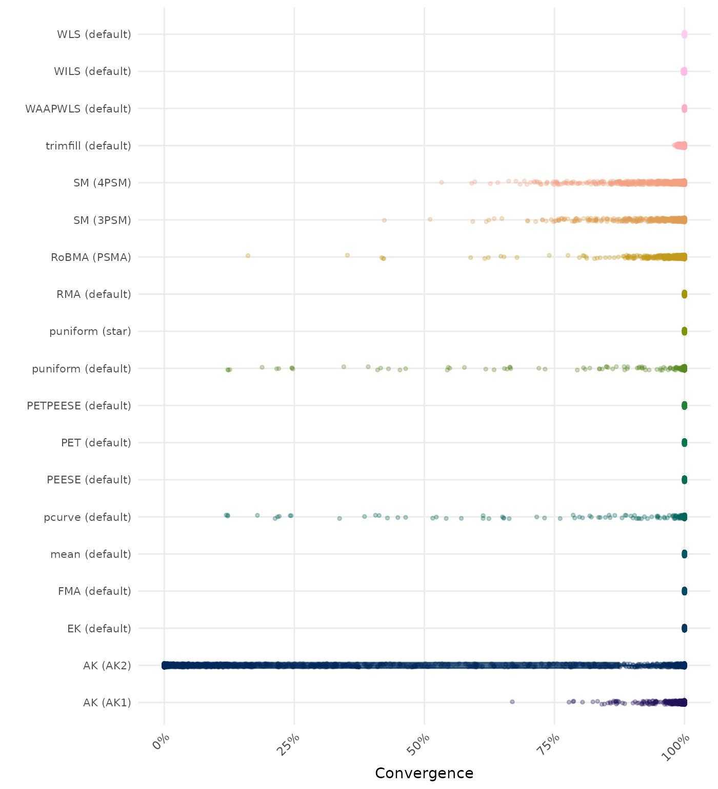
Methods are compared using condition-wise ranks. Direct comparison using the average bias is not possible because the data generating mechanisms differ in the outcome scale. See the DGM-specific results (or subresults) to see the distribution of bias values on the corresponding outcome scale.

Methods are compared using condition-wise ranks. Direct comparison using the average RMSE is not possible because the data generating mechanisms differ in the outcome scale. See the DGM-specific results (or subresults) to see the distribution of RMSE values on the corresponding outcome scale.
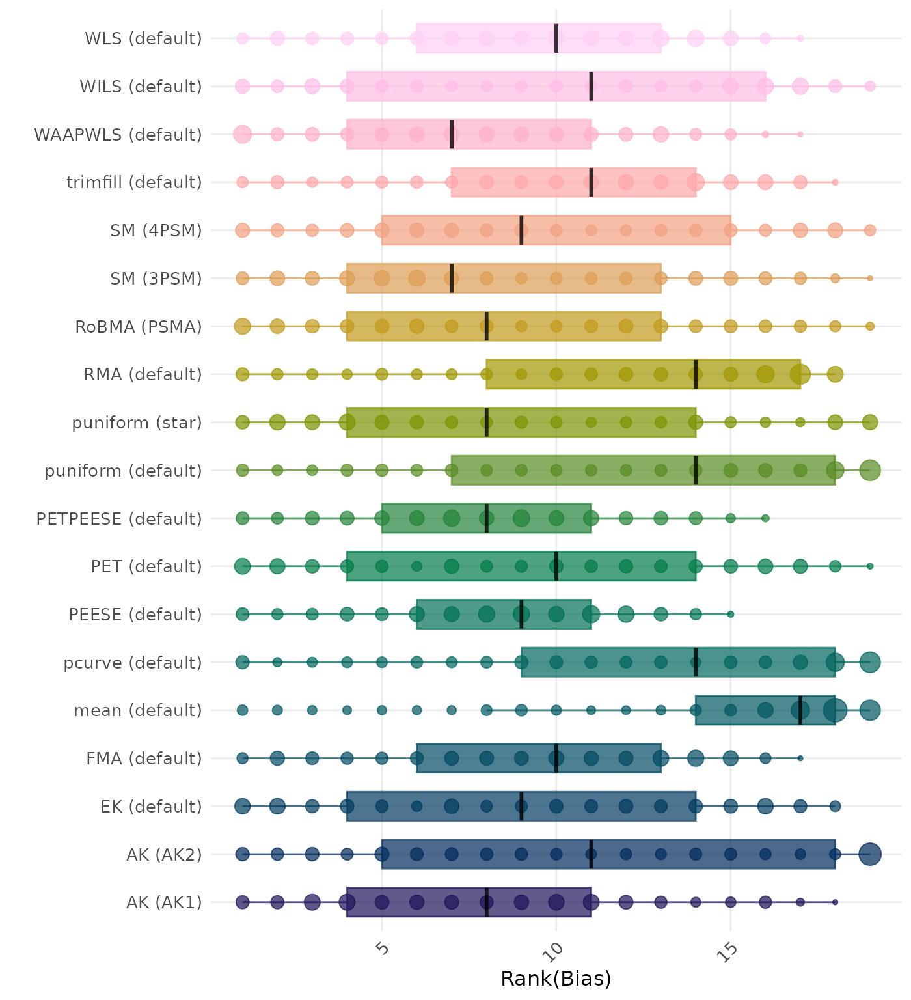


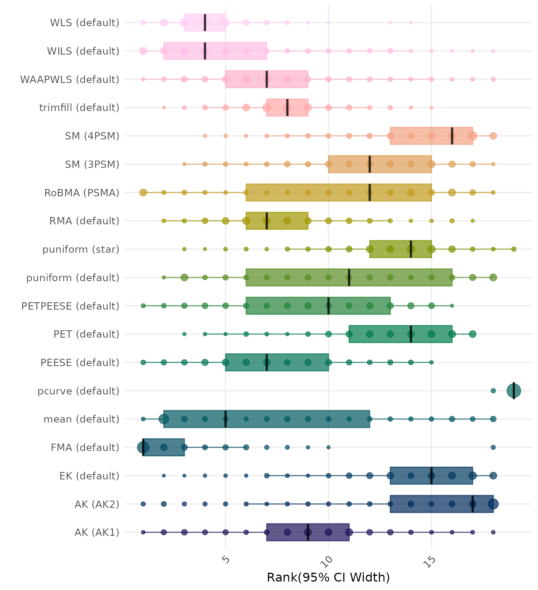


By-Condition Performance (Replacement in Case of Non-Convergence)
The results below incorporate method replacement to handle non-convergence. If a method fails to converge, its results are replaced with the results from a simpler method (e.g., random-effects meta-analysis without publication bias adjustment). This emulates what a data analyst may do in practice in case a method does not converge. However, note that these results do not correspond to “pure” method performance as they might combine multiple different methods. See TODO for details of the method replacement specification.

Methods are compared using condition-wise ranks. Direct comparison using the average bias is not possible because the data generating mechanisms differ in the outcome scale. See the DGM-specific results (or subresults) to see the distribution of bias values on the corresponding outcome scale.
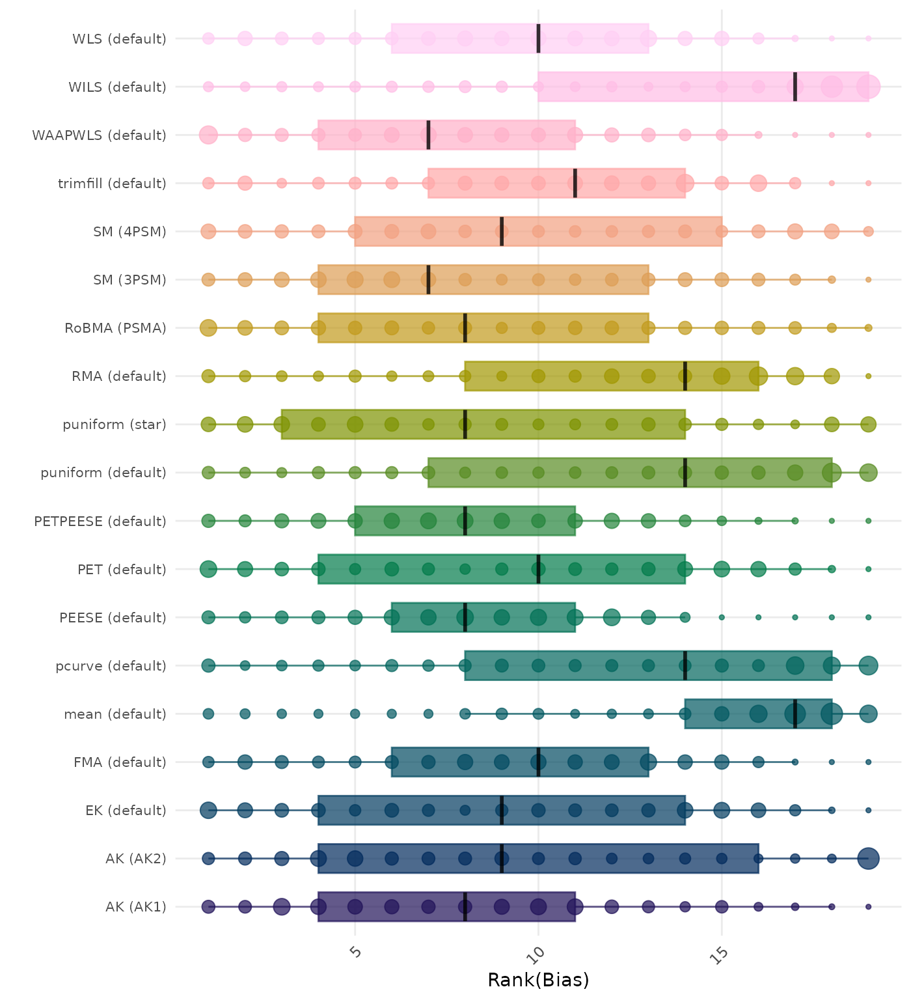
Methods are compared using condition-wise ranks. Direct comparison using the average RMSE is not possible because the data generating mechanisms differ in the outcome scale. See the DGM-specific results (or subresults) to see the distribution of RMSE values on the corresponding outcome scale.


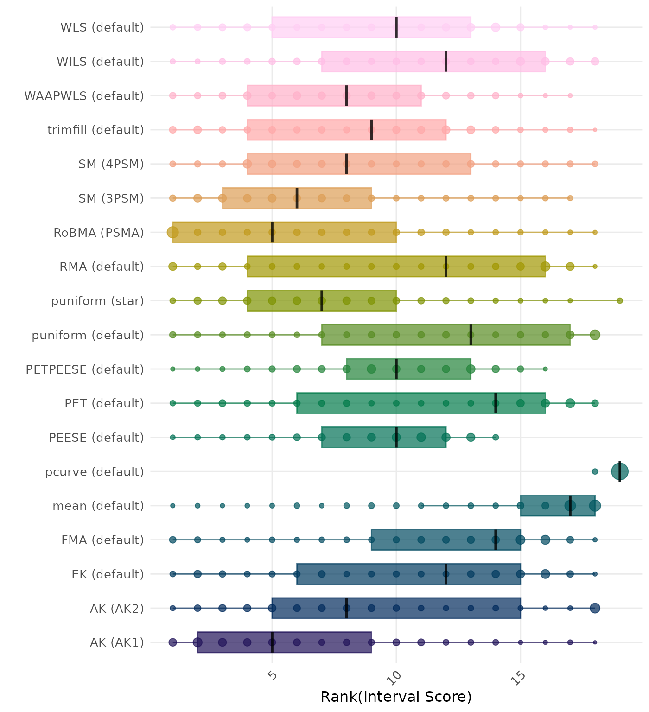

Subset: Publication Bias Present
These results are based on Stanley2017, Alinaghi2018, Bom2019, and Carter2019 data generating mechanisms with the total of 1143 conditions.
Average Performance
Method performance measures are aggregated across all simulated conditions to provide an overall impression of method performance. However, keep in mind that a method with a high overall ranking is not necessarily the “best” method for a particular application. To select a suitable method for your application, consider also non-aggregated performance measures in conditions most relevant to your application. (TODO: add links to non-aggregated data exploration tool)
Methods are compared using condition-wise ranks. Direct comparison using the average bias is not possible because the data generating mechanisms differ in the outcome scale. See the DGM-specific results (or subresults) to see the distribution of bias values on the corresponding outcome scale.
| Rank | Method | Mean Rank | Rank | Method | Mean Rank |
|---|---|---|---|---|---|
| 1 | WAAPWLS-default | 7.195 | 1 | AK-AK2 | 6.809 |
| 2 | AK-AK1 | 7.723 | 2 | WAAPWLS-default | 7.420 |
| 3 | RoBMA-PSMA | 7.818 | 3 | AK-AK1 | 7.752 |
| 4 | PETPEESE-default | 8.016 | 4 | RoBMA-PSMA | 7.853 |
| 5 | PEESE-default | 8.026 | 5 | PETPEESE-default | 8.202 |
| 6 | SM-3PSM | 8.310 | 6 | PEESE-default | 8.219 |
| 7 | EK-default | 8.487 | 7 | SM-3PSM | 8.435 |
| 8 | PET-default | 8.612 | 8 | EK-default | 8.641 |
| 9 | puniform-star | 8.749 | 9 | PET-default | 8.766 |
| 10 | trimfill-default | 8.992 | 10 | puniform-star | 8.973 |
| 11 | SM-4PSM | 9.527 | 11 | trimfill-default | 9.205 |
| 12 | FMA-default | 9.689 | 12 | SM-4PSM | 9.731 |
| 13 | WLS-default | 9.696 | 13 | FMA-default | 9.953 |
| 14 | AK-AK2 | 10.445 | 14 | WLS-default | 9.960 |
| 15 | pcurve-default | 11.142 | 15 | pcurve-default | 11.327 |
| 16 | puniform-default | 11.574 | 16 | puniform-default | 11.780 |
| 17 | RMA-default | 13.560 | 17 | RMA-default | 13.863 |
| 18 | WILS-default | 13.977 | 18 | WILS-default | 14.136 |
| 19 | mean-default | 16.395 | 19 | mean-default | 16.680 |
Methods are compared using condition-wise ranks. Direct comparison using the average RMSE is not possible because the data generating mechanisms differ in the outcome scale. See the DGM-specific results (or subresults) to see the distribution of RMSE values on the corresponding outcome scale.
| Rank | Method | Mean Rank | Rank | Method | Mean Rank |
|---|---|---|---|---|---|
| 1 | AK-AK1 | 6.224 | 1 | AK-AK1 | 6.215 |
| 2 | RoBMA-PSMA | 7.443 | 2 | AK-AK2 | 7.052 |
| 3 | WAAPWLS-default | 7.475 | 3 | WAAPWLS-default | 7.638 |
| 4 | trimfill-default | 8.214 | 4 | RoBMA-PSMA | 7.786 |
| 5 | PEESE-default | 8.266 | 5 | trimfill-default | 8.371 |
| 6 | FMA-default | 8.402 | 6 | PEESE-default | 8.472 |
| 7 | WLS-default | 8.407 | 7 | FMA-default | 8.580 |
| 8 | PETPEESE-default | 9.010 | 8 | WLS-default | 8.584 |
| 9 | SM-3PSM | 9.213 | 9 | PETPEESE-default | 9.206 |
| 10 | puniform-star | 9.668 | 10 | SM-3PSM | 9.416 |
| 11 | pcurve-default | 10.156 | 11 | puniform-star | 9.844 |
| 12 | EK-default | 10.215 | 12 | pcurve-default | 10.325 |
| 13 | PET-default | 10.339 | 13 | EK-default | 10.384 |
| 14 | AK-AK2 | 10.665 | 14 | PET-default | 10.512 |
| 15 | SM-4PSM | 11.477 | 15 | SM-4PSM | 11.715 |
| 16 | RMA-default | 11.638 | 16 | RMA-default | 11.864 |
| 17 | puniform-default | 12.098 | 17 | puniform-default | 12.281 |
| 18 | WILS-default | 13.818 | 18 | WILS-default | 13.981 |
| 19 | mean-default | 15.129 | 19 | mean-default | 15.404 |
| Rank | Method | Value | Rank | Method | Value |
|---|---|---|---|---|---|
| 1 | RoBMA-PSMA | 0.759 | 1 | RoBMA-PSMA | 0.756 |
| 2 | AK-AK2 | 0.754 | 2 | SM-4PSM | 0.717 |
| 3 | SM-4PSM | 0.722 | 3 | puniform-star | 0.688 |
| 4 | SM-3PSM | 0.688 | 4 | SM-3PSM | 0.682 |
| 5 | puniform-star | 0.688 | 5 | AK-AK2 | 0.672 |
| 6 | EK-default | 0.611 | 6 | EK-default | 0.611 |
| 7 | PET-default | 0.588 | 7 | PET-default | 0.588 |
| 8 | AK-AK1 | 0.526 | 8 | AK-AK1 | 0.526 |
| 9 | WAAPWLS-default | 0.523 | 9 | WAAPWLS-default | 0.523 |
| 10 | PETPEESE-default | 0.518 | 10 | PETPEESE-default | 0.518 |
| 11 | trimfill-default | 0.485 | 11 | trimfill-default | 0.484 |
| 12 | puniform-default | 0.478 | 12 | puniform-default | 0.478 |
| 13 | PEESE-default | 0.467 | 13 | PEESE-default | 0.467 |
| 14 | WLS-default | 0.393 | 14 | WLS-default | 0.393 |
| 15 | RMA-default | 0.358 | 15 | RMA-default | 0.358 |
| 16 | FMA-default | 0.286 | 16 | FMA-default | 0.286 |
| 17 | mean-default | 0.247 | 17 | mean-default | 0.247 |
| 18 | WILS-default | 0.201 | 18 | WILS-default | 0.202 |
| 19 | pcurve-default | NaN | 19 | pcurve-default | NaN |
| Rank | Method | Mean Rank | Rank | Method | Mean Rank |
|---|---|---|---|---|---|
| 1 | FMA-default | 0.145 | 1 | FMA-default | 0.145 |
| 2 | WLS-default | 0.270 | 2 | WLS-default | 0.270 |
| 3 | PEESE-default | 0.324 | 3 | PEESE-default | 0.324 |
| 4 | WAAPWLS-default | 0.327 | 4 | WAAPWLS-default | 0.327 |
| 5 | WILS-default | 0.327 | 5 | WILS-default | 0.327 |
| 6 | trimfill-default | 0.391 | 6 | trimfill-default | 0.391 |
| 7 | RMA-default | 0.417 | 7 | RMA-default | 0.417 |
| 8 | mean-default | 0.447 | 8 | mean-default | 0.447 |
| 9 | PETPEESE-default | 0.481 | 9 | PETPEESE-default | 0.481 |
| 10 | RoBMA-PSMA | 0.500 | 10 | RoBMA-PSMA | 0.499 |
| 11 | puniform-star | 0.523 | 11 | puniform-star | 0.523 |
| 12 | puniform-default | 0.537 | 12 | puniform-default | 0.532 |
| 13 | PET-default | 0.548 | 13 | PET-default | 0.548 |
| 14 | AK-AK1 | 0.652 | 14 | AK-AK1 | 0.645 |
| 15 | EK-default | 0.663 | 15 | EK-default | 0.663 |
| 16 | SM-3PSM | 1.250 | 16 | AK-AK2 | 0.884 |
| 17 | AK-AK2 | 1.480 | 17 | SM-3PSM | 1.140 |
| 18 | SM-4PSM | 2.855 | 18 | SM-4PSM | 1.694 |
| 19 | pcurve-default | NaN | 19 | pcurve-default | NaN |
| Rank | Method | Value | Rank | Method | Value |
|---|---|---|---|---|---|
| 1 | RoBMA-PSMA | 1.757 | 1 | RoBMA-PSMA | 1.818 |
| 2 | EK-default | 2.335 | 2 | EK-default | 2.335 |
| 3 | PET-default | 2.429 | 3 | PET-default | 2.429 |
| 4 | AK-AK2 | 2.623 | 4 | AK-AK2 | 2.502 |
| 5 | puniform-star | 2.690 | 5 | puniform-star | 2.690 |
| 6 | SM-3PSM | 2.951 | 6 | SM-3PSM | 2.914 |
| 7 | PETPEESE-default | 3.176 | 7 | PETPEESE-default | 3.176 |
| 8 | PEESE-default | 3.330 | 8 | PEESE-default | 3.330 |
| 9 | WAAPWLS-default | 3.678 | 9 | SM-4PSM | 3.387 |
| 10 | trimfill-default | 3.983 | 10 | WAAPWLS-default | 3.678 |
| 11 | AK-AK1 | 4.063 | 11 | trimfill-default | 3.984 |
| 12 | SM-4PSM | 4.499 | 12 | AK-AK1 | 4.057 |
| 13 | WLS-default | 4.826 | 13 | WLS-default | 4.826 |
| 14 | FMA-default | 6.274 | 14 | FMA-default | 6.274 |
| 15 | RMA-default | 6.797 | 15 | RMA-default | 6.797 |
| 16 | mean-default | 9.022 | 16 | mean-default | 9.022 |
| 17 | puniform-default | 10.285 | 17 | puniform-default | 10.279 |
| 18 | WILS-default | 15.905 | 18 | WILS-default | 15.886 |
| 19 | pcurve-default | NaN | 19 | pcurve-default | NaN |
| Rank | Method | Value | Rank | Method | Value |
|---|---|---|---|---|---|
| 1 | RoBMA-PSMA | 0.124 | 1 | RoBMA-PSMA | 0.129 |
| 2 | AK-AK2 | 0.150 | 2 | SM-4PSM | 0.284 |
| 3 | SM-4PSM | 0.279 | 3 | PET-default | 0.293 |
| 4 | PET-default | 0.293 | 4 | EK-default | 0.294 |
| 5 | EK-default | 0.294 | 5 | SM-3PSM | 0.323 |
| 6 | SM-3PSM | 0.318 | 6 | puniform-star | 0.327 |
| 7 | puniform-star | 0.327 | 7 | AK-AK2 | 0.408 |
| 8 | WILS-default | 0.570 | 8 | WILS-default | 0.571 |
| 9 | PETPEESE-default | 0.588 | 9 | PETPEESE-default | 0.588 |
| 10 | puniform-default | 0.618 | 10 | puniform-default | 0.618 |
| 11 | WAAPWLS-default | 0.650 | 11 | WAAPWLS-default | 0.650 |
| 12 | PEESE-default | 0.664 | 12 | PEESE-default | 0.664 |
| 13 | trimfill-default | 0.706 | 13 | trimfill-default | 0.706 |
| 14 | AK-AK1 | 0.731 | 14 | AK-AK1 | 0.731 |
| 15 | WLS-default | 0.762 | 15 | WLS-default | 0.762 |
| 16 | RMA-default | 0.782 | 16 | RMA-default | 0.782 |
| 17 | mean-default | 0.809 | 17 | mean-default | 0.809 |
| 18 | FMA-default | 0.884 | 18 | FMA-default | 0.884 |
| 19 | pcurve-default | NaN | 19 | pcurve-default | NaN |
| Rank | Method | Value | Rank | Method | Value |
|---|---|---|---|---|---|
| 1 | FMA-default | 0.993 | 1 | FMA-default | 0.993 |
| 2 | mean-default | 0.980 | 2 | mean-default | 0.980 |
| 3 | RMA-default | 0.979 | 3 | RMA-default | 0.979 |
| 4 | WLS-default | 0.978 | 4 | WLS-default | 0.978 |
| 5 | AK-AK1 | 0.974 | 5 | AK-AK1 | 0.974 |
| 6 | trimfill-default | 0.971 | 6 | trimfill-default | 0.971 |
| 7 | PEESE-default | 0.953 | 7 | PEESE-default | 0.953 |
| 8 | WAAPWLS-default | 0.937 | 8 | WAAPWLS-default | 0.937 |
| 9 | puniform-default | 0.929 | 9 | puniform-default | 0.929 |
| 10 | PETPEESE-default | 0.916 | 10 | PETPEESE-default | 0.916 |
| 11 | EK-default | 0.865 | 11 | AK-AK2 | 0.889 |
| 12 | PET-default | 0.865 | 12 | EK-default | 0.865 |
| 13 | SM-3PSM | 0.789 | 13 | PET-default | 0.865 |
| 14 | AK-AK2 | 0.777 | 14 | SM-3PSM | 0.798 |
| 15 | puniform-star | 0.766 | 15 | puniform-star | 0.766 |
| 16 | SM-4PSM | 0.711 | 16 | SM-4PSM | 0.732 |
| 17 | WILS-default | 0.704 | 17 | WILS-default | 0.708 |
| 18 | RoBMA-PSMA | 0.665 | 18 | RoBMA-PSMA | 0.669 |
| 19 | pcurve-default | NaN | 19 | pcurve-default | NaN |
This measure indicates how much a significant test result changes the odds of H1 versus H0.
| Rank | Method | Log Value | Rank | Method | Log Value |
|---|---|---|---|---|---|
| 1 | RoBMA-PSMA | 3.091 | 1 | RoBMA-PSMA | 2.943 |
| 2 | AK-AK2 | 1.883 | 2 | puniform-default | 1.716 |
| 3 | puniform-default | 1.721 | 3 | PET-default | 1.408 |
| 4 | PET-default | 1.408 | 4 | EK-default | 1.407 |
| 5 | EK-default | 1.407 | 5 | AK-AK2 | 1.349 |
| 6 | SM-3PSM | 1.060 | 6 | puniform-star | 1.059 |
| 7 | puniform-star | 1.059 | 7 | SM-3PSM | 1.049 |
| 8 | SM-4PSM | 0.859 | 8 | SM-4PSM | 0.893 |
| 9 | AK-AK1 | 0.819 | 9 | AK-AK1 | 0.818 |
| 10 | PETPEESE-default | 0.743 | 10 | PETPEESE-default | 0.743 |
| 11 | trimfill-default | 0.711 | 11 | trimfill-default | 0.711 |
| 12 | WAAPWLS-default | 0.694 | 12 | WAAPWLS-default | 0.694 |
| 13 | RMA-default | 0.602 | 13 | RMA-default | 0.602 |
| 14 | PEESE-default | 0.592 | 14 | PEESE-default | 0.592 |
| 15 | WLS-default | 0.521 | 15 | WLS-default | 0.521 |
| 16 | mean-default | 0.427 | 16 | mean-default | 0.427 |
| 17 | WILS-default | 0.348 | 17 | WILS-default | 0.351 |
| 18 | FMA-default | 0.260 | 18 | FMA-default | 0.260 |
| 19 | pcurve-default | NaN | 19 | pcurve-default | NaN |
This measure indicates how much a non-significant test result changes the odds of H1 versus H0.
| Rank | Method | Log Value | Rank | Method | Log Value |
|---|---|---|---|---|---|
| 1 | PET-default | -4.290 | 1 | PET-default | -4.290 |
| 2 | EK-default | -4.290 | 2 | EK-default | -4.290 |
| 3 | WAAPWLS-default | -3.635 | 3 | AK-AK2 | -4.171 |
| 4 | PEESE-default | -3.423 | 4 | WAAPWLS-default | -3.635 |
| 5 | puniform-default | -3.360 | 5 | PEESE-default | -3.423 |
| 6 | PETPEESE-default | -3.177 | 6 | puniform-default | -3.360 |
| 7 | RoBMA-PSMA | -2.921 | 7 | PETPEESE-default | -3.177 |
| 8 | SM-3PSM | -2.837 | 8 | RoBMA-PSMA | -2.914 |
| 9 | trimfill-default | -2.818 | 9 | SM-3PSM | -2.878 |
| 10 | WLS-default | -2.806 | 10 | trimfill-default | -2.819 |
| 11 | AK-AK2 | -2.682 | 11 | WLS-default | -2.806 |
| 12 | AK-AK1 | -2.610 | 12 | AK-AK1 | -2.611 |
| 13 | puniform-star | -2.608 | 13 | puniform-star | -2.608 |
| 14 | RMA-default | -2.427 | 14 | RMA-default | -2.427 |
| 15 | FMA-default | -2.372 | 15 | FMA-default | -2.372 |
| 16 | mean-default | -2.149 | 16 | SM-4PSM | -2.166 |
| 17 | SM-4PSM | -1.914 | 17 | mean-default | -2.149 |
| 18 | WILS-default | 0.311 | 18 | WILS-default | 0.305 |
| 19 | pcurve-default | NaN | 19 | pcurve-default | NaN |
A combined method rank is the mean method rank across all performance measures.
| Rank | Method | Mean Rank | Rank | Method | Mean Rank |
|---|---|---|---|---|---|
| 1 | RoBMA-PSMA | 4.889 | 1 | RoBMA-PSMA | 5.333 |
| 2 | WAAPWLS-default | 6.667 | 2 | AK-AK2 | 6.000 |
| 3 | EK-default | 7.222 | 3 | WAAPWLS-default | 7.000 |
| 3 | PET-default | 7.222 | 4 | EK-default | 7.333 |
| 5 | PEESE-default | 7.889 | 4 | PET-default | 7.333 |
| 6 | PETPEESE-default | 8.111 | 6 | PEESE-default | 8.222 |
| 7 | SM-3PSM | 8.222 | 7 | PETPEESE-default | 8.444 |
| 8 | AK-AK1 | 8.444 | 8 | AK-AK1 | 8.667 |
| 9 | AK-AK2 | 8.889 | 9 | SM-3PSM | 8.778 |
| 9 | trimfill-default | 8.889 | 10 | puniform-star | 8.889 |
| 11 | puniform-star | 9.111 | 11 | trimfill-default | 9.333 |
| 12 | WLS-default | 10.333 | 12 | WLS-default | 10.667 |
| 13 | FMA-default | 11.222 | 13 | SM-4PSM | 10.889 |
| 13 | puniform-default | 11.222 | 14 | puniform-default | 11.222 |
| 15 | SM-4PSM | 11.444 | 15 | FMA-default | 11.444 |
| 16 | RMA-default | 12.889 | 16 | RMA-default | 12.889 |
| 17 | mean-default | 14.444 | 17 | mean-default | 14.556 |
| 18 | WILS-default | 15.222 | 18 | WILS-default | 15.222 |
| 19 | pcurve-default | 17.667 | 19 | pcurve-default | 17.778 |
By-Condition Performance (Conditional on Method Convergence)
The results below are conditional on method convergence. Note that the methods might differ in convergence rate and are therefore not compared on the same data sets.
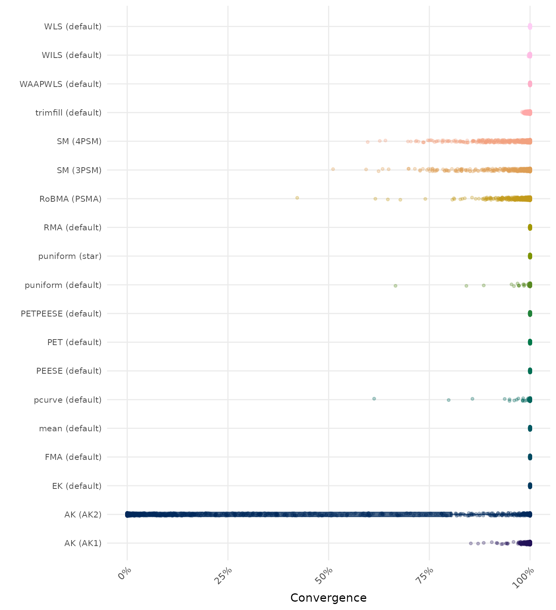

Methods are compared using condition-wise ranks. Direct comparison using the average bias is not possible because the data generating mechanisms differ in the outcome scale. See the DGM-specific results (or subresults) to see the distribution of bias values on the corresponding outcome scale.

Methods are compared using condition-wise ranks. Direct comparison using the average RMSE is not possible because the data generating mechanisms differ in the outcome scale. See the DGM-specific results (or subresults) to see the distribution of RMSE values on the corresponding outcome scale.
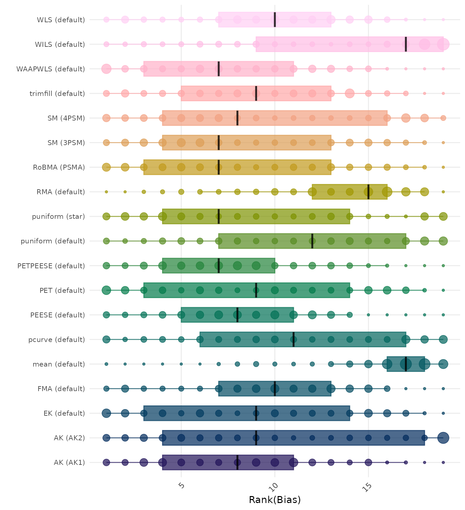
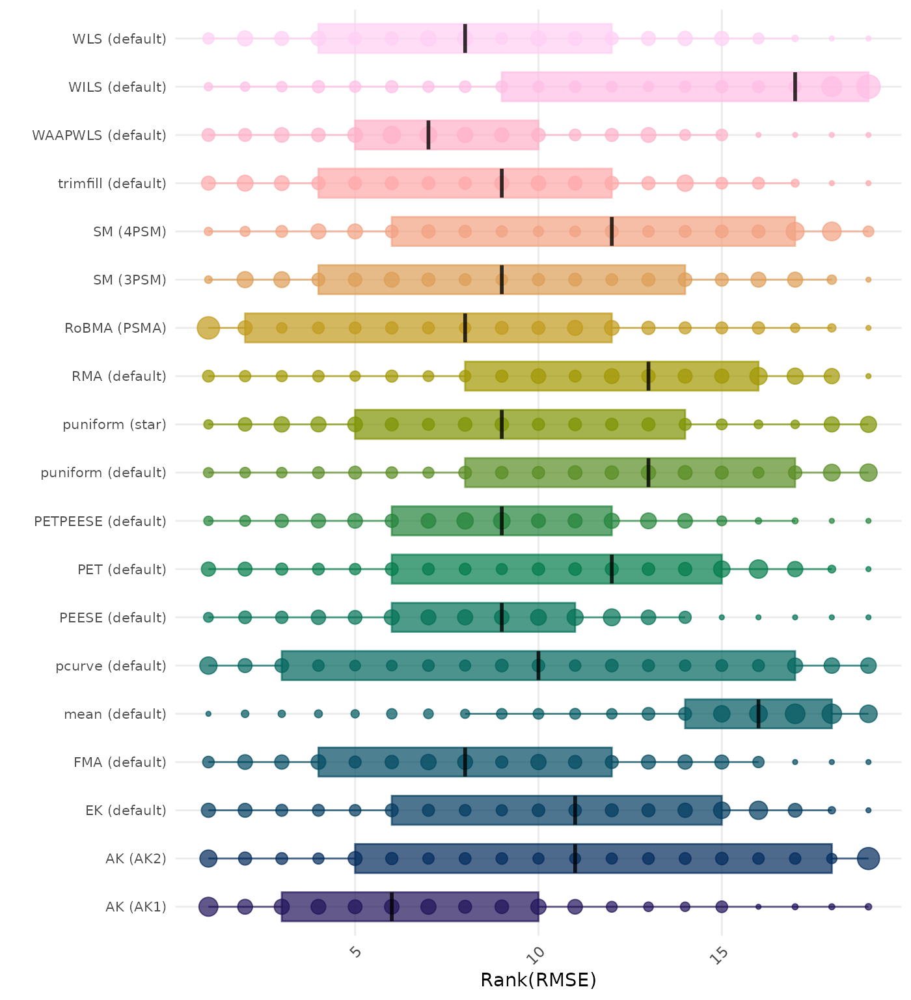
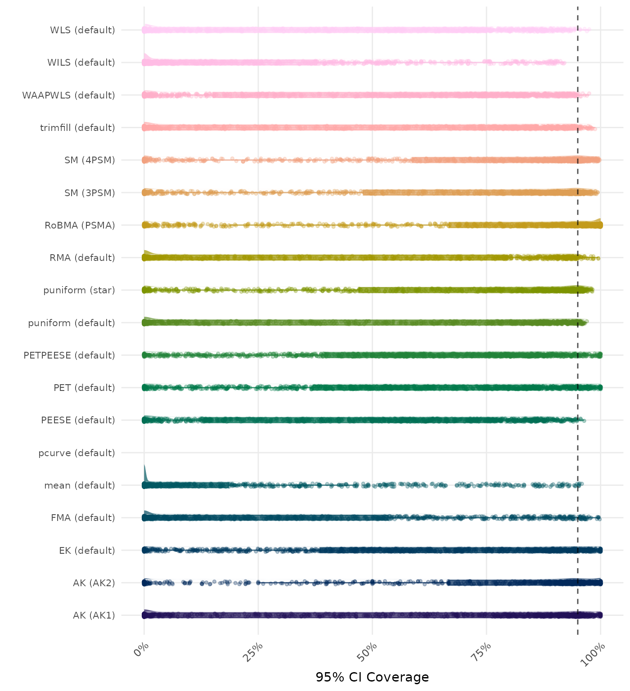
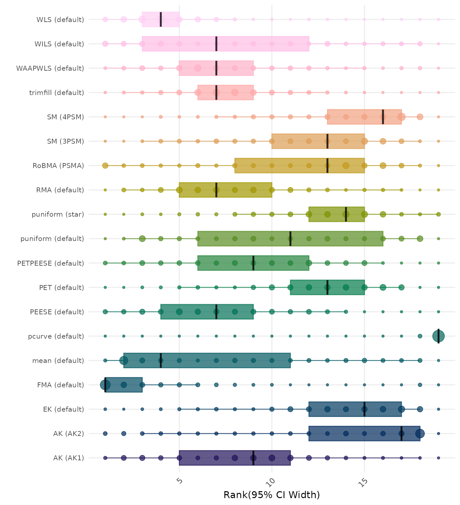
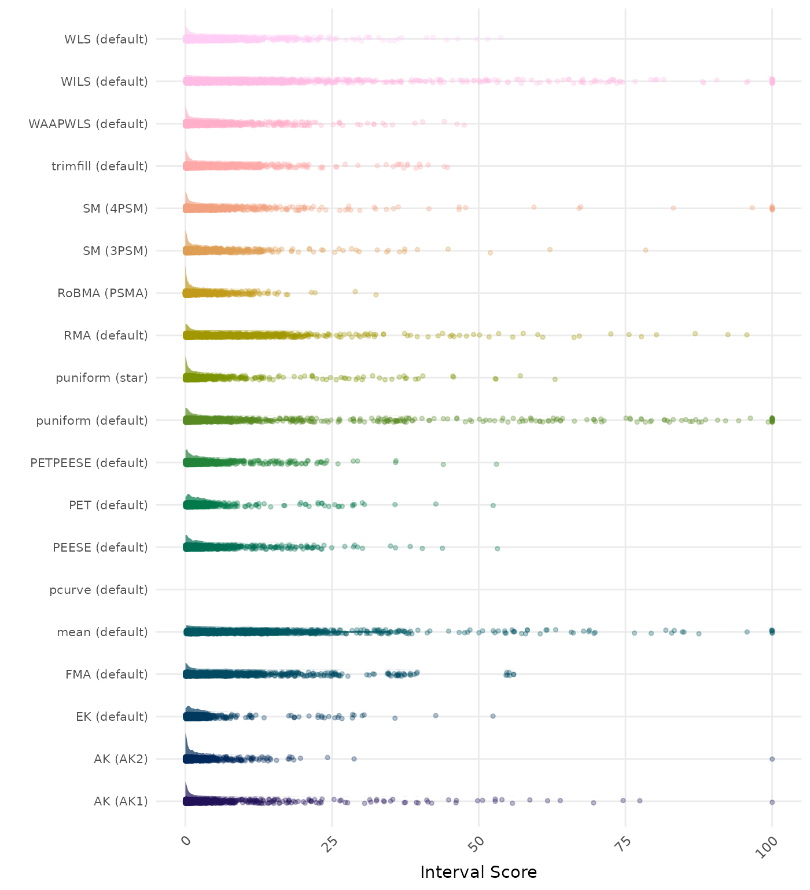
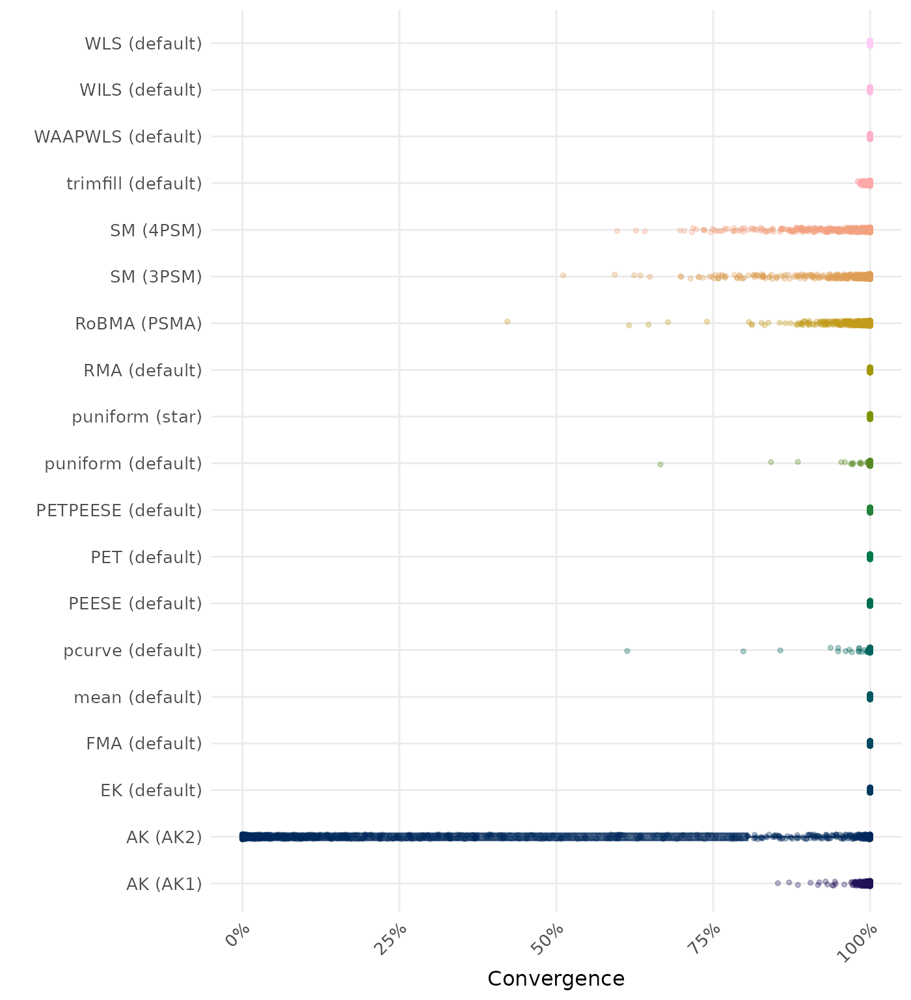
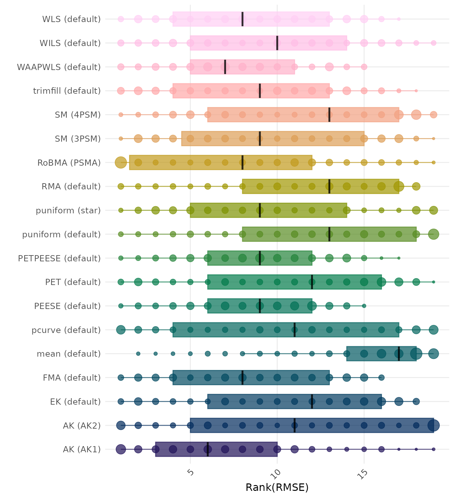
By-Condition Performance (Replacement in Case of Non-Convergence)
The results below incorporate method replacement to handle non-convergence. If a method fails to converge, its results are replaced with the results from a simpler method (e.g., random-effects meta-analysis without publication bias adjustment). This emulates what a data analyst may do in practice in case a method does not converge. However, note that these results do not correspond to “pure” method performance as they might combine multiple different methods. See TODO for details of the method replacement specification.

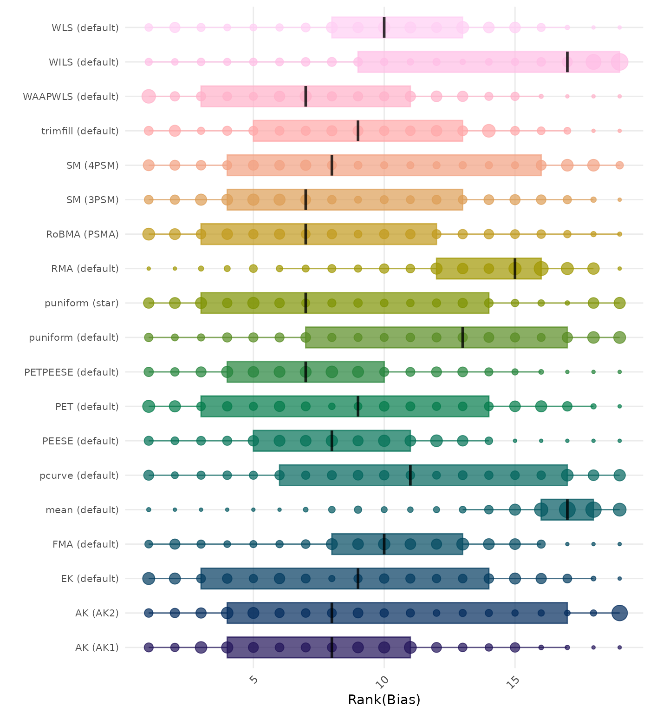
Methods are compared using condition-wise ranks. Direct comparison using the average bias is not possible because the data generating mechanisms differ in the outcome scale. See the DGM-specific results (or subresults) to see the distribution of bias values on the corresponding outcome scale.
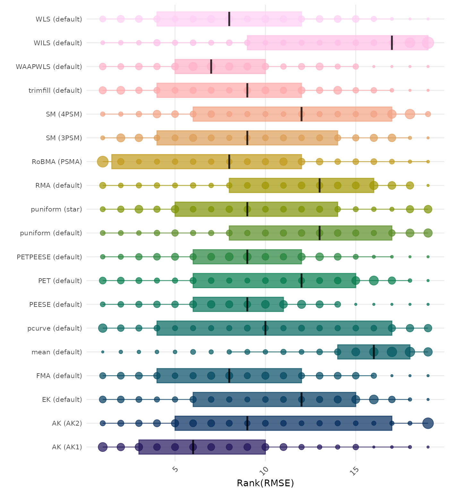
Methods are compared using condition-wise ranks. Direct comparison using the average RMSE is not possible because the data generating mechanisms differ in the outcome scale. See the DGM-specific results (or subresults) to see the distribution of RMSE values on the corresponding outcome scale.


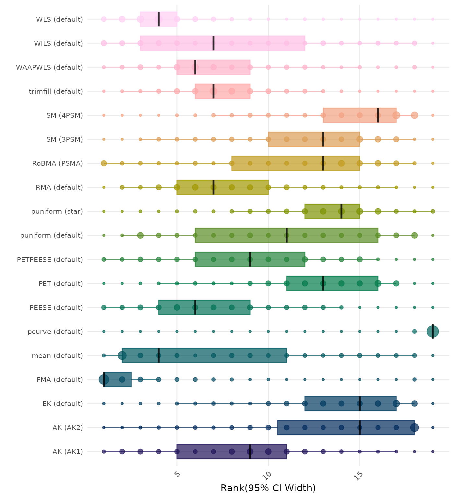

Subset: Publication Bias Absent
These results are based on Stanley2017, Alinaghi2018, Bom2019, and Carter2019 data generating mechanisms with the total of 522 conditions.
Average Performance
Method performance measures are aggregated across all simulated conditions to provide an overall impression of method performance. However, keep in mind that a method with a high overall ranking is not necessarily the “best” method for a particular application. To select a suitable method for your application, consider also non-aggregated performance measures in conditions most relevant to your application. (TODO: add links to non-aggregated data exploration tool)
Methods are compared using condition-wise ranks. Direct comparison using the average bias is not possible because the data generating mechanisms differ in the outcome scale. See the DGM-specific results (or subresults) to see the distribution of bias values on the corresponding outcome scale.
| Rank | Method | Mean Rank | Rank | Method | Mean Rank |
|---|---|---|---|---|---|
| 1 | AK-AK1 | 7.004 | 1 | AK-AK1 | 7.157 |
| 2 | WAAPWLS-default | 7.163 | 2 | WAAPWLS-default | 7.375 |
| 3 | WLS-default | 7.490 | 3 | WLS-default | 7.724 |
| 4 | FMA-default | 7.519 | 4 | SM-3PSM | 7.736 |
| 5 | SM-3PSM | 7.692 | 5 | FMA-default | 7.753 |
| 6 | PEESE-default | 7.910 | 6 | PEESE-default | 8.052 |
| 7 | RMA-default | 8.335 | 7 | AK-AK2 | 8.186 |
| 8 | PETPEESE-default | 8.776 | 8 | RMA-default | 8.502 |
| 9 | puniform-star | 8.994 | 9 | PETPEESE-default | 8.925 |
| 10 | SM-4PSM | 9.126 | 10 | puniform-star | 9.103 |
| 11 | PET-default | 9.362 | 11 | SM-4PSM | 9.287 |
| 12 | EK-default | 9.381 | 12 | PET-default | 9.542 |
| 13 | RoBMA-PSMA | 9.523 | 13 | EK-default | 9.567 |
| 14 | mean-default | 10.879 | 14 | RoBMA-PSMA | 9.663 |
| 15 | AK-AK2 | 11.400 | 15 | mean-default | 11.115 |
| 16 | trimfill-default | 12.843 | 16 | trimfill-default | 13.098 |
| 17 | puniform-default | 14.013 | 17 | puniform-default | 14.148 |
| 18 | pcurve-default | 15.293 | 18 | pcurve-default | 15.481 |
| 19 | WILS-default | 15.471 | 19 | WILS-default | 15.588 |
Methods are compared using condition-wise ranks. Direct comparison using the average RMSE is not possible because the data generating mechanisms differ in the outcome scale. See the DGM-specific results (or subresults) to see the distribution of RMSE values on the corresponding outcome scale.
| Rank | Method | Mean Rank | Rank | Method | Mean Rank |
|---|---|---|---|---|---|
| 1 | RoBMA-PSMA | 5.548 | 1 | RoBMA-PSMA | 5.695 |
| 2 | AK-AK1 | 5.935 | 2 | AK-AK1 | 6.094 |
| 3 | FMA-default | 6.483 | 3 | FMA-default | 6.644 |
| 4 | WLS-default | 6.496 | 4 | WLS-default | 6.657 |
| 5 | RMA-default | 7.069 | 5 | RMA-default | 7.195 |
| 6 | WAAPWLS-default | 7.148 | 6 | WAAPWLS-default | 7.272 |
| 7 | SM-3PSM | 7.508 | 7 | SM-3PSM | 7.617 |
| 8 | trimfill-default | 8.533 | 8 | trimfill-default | 8.713 |
| 9 | puniform-star | 9.320 | 9 | AK-AK2 | 9.295 |
| 10 | PEESE-default | 9.617 | 10 | puniform-star | 9.460 |
| 11 | SM-4PSM | 10.736 | 11 | PEESE-default | 9.738 |
| 12 | mean-default | 11.180 | 12 | SM-4PSM | 10.914 |
| 13 | PETPEESE-default | 11.421 | 13 | mean-default | 11.354 |
| 14 | AK-AK2 | 12.067 | 14 | PETPEESE-default | 11.556 |
| 15 | EK-default | 12.795 | 15 | EK-default | 12.914 |
| 16 | PET-default | 12.939 | 16 | PET-default | 13.056 |
| 17 | WILS-default | 14.157 | 17 | WILS-default | 14.284 |
| 18 | pcurve-default | 14.211 | 18 | pcurve-default | 14.372 |
| 19 | puniform-default | 14.594 | 19 | puniform-default | 14.753 |
| Rank | Method | Value | Rank | Method | Value |
|---|---|---|---|---|---|
| 1 | RoBMA-PSMA | 0.888 | 1 | RoBMA-PSMA | 0.888 |
| 2 | AK-AK2 | 0.879 | 2 | SM-4PSM | 0.856 |
| 3 | SM-4PSM | 0.860 | 3 | puniform-star | 0.832 |
| 4 | puniform-star | 0.832 | 4 | SM-3PSM | 0.830 |
| 5 | SM-3PSM | 0.831 | 5 | AK-AK2 | 0.829 |
| 6 | AK-AK1 | 0.791 | 6 | AK-AK1 | 0.790 |
| 7 | WAAPWLS-default | 0.711 | 7 | WAAPWLS-default | 0.711 |
| 8 | EK-default | 0.706 | 8 | EK-default | 0.706 |
| 9 | PETPEESE-default | 0.690 | 9 | PETPEESE-default | 0.690 |
| 10 | PET-default | 0.689 | 10 | PET-default | 0.689 |
| 11 | RMA-default | 0.675 | 11 | RMA-default | 0.675 |
| 12 | trimfill-default | 0.673 | 12 | trimfill-default | 0.673 |
| 13 | PEESE-default | 0.656 | 13 | PEESE-default | 0.656 |
| 14 | mean-default | 0.638 | 14 | mean-default | 0.638 |
| 15 | WLS-default | 0.619 | 15 | WLS-default | 0.619 |
| 16 | puniform-default | 0.497 | 16 | puniform-default | 0.499 |
| 17 | FMA-default | 0.460 | 17 | FMA-default | 0.460 |
| 18 | WILS-default | 0.372 | 18 | WILS-default | 0.372 |
| 19 | pcurve-default | NaN | 19 | pcurve-default | NaN |
| Rank | Method | Mean Rank | Rank | Method | Mean Rank |
|---|---|---|---|---|---|
| 1 | FMA-default | 0.144 | 1 | FMA-default | 0.144 |
| 2 | WILS-default | 0.235 | 2 | WILS-default | 0.235 |
| 3 | WLS-default | 0.237 | 3 | WLS-default | 0.237 |
| 4 | WAAPWLS-default | 0.286 | 4 | WAAPWLS-default | 0.286 |
| 5 | PEESE-default | 0.295 | 5 | PEESE-default | 0.295 |
| 6 | RoBMA-PSMA | 0.323 | 6 | RoBMA-PSMA | 0.323 |
| 7 | trimfill-default | 0.341 | 7 | trimfill-default | 0.341 |
| 8 | RMA-default | 0.356 | 8 | RMA-default | 0.356 |
| 9 | mean-default | 0.392 | 9 | mean-default | 0.392 |
| 10 | puniform-star | 0.413 | 10 | puniform-star | 0.413 |
| 11 | PETPEESE-default | 0.470 | 11 | PETPEESE-default | 0.470 |
| 12 | PET-default | 0.495 | 12 | PET-default | 0.495 |
| 13 | SM-3PSM | 0.549 | 13 | SM-3PSM | 0.538 |
| 14 | EK-default | 0.594 | 14 | EK-default | 0.594 |
| 15 | SM-4PSM | 0.981 | 15 | SM-4PSM | 0.760 |
| 16 | puniform-default | 1.256 | 16 | puniform-default | 0.904 |
| 17 | AK-AK2 | 2.287 | 17 | AK-AK1 | 10.631 |
| 18 | AK-AK1 | 12.863 | 18 | AK-AK2 | 10.978 |
| 19 | pcurve-default | NaN | 19 | pcurve-default | NaN |
| Rank | Method | Value | Rank | Method | Value |
|---|---|---|---|---|---|
| 1 | RoBMA-PSMA | 0.868 | 1 | RoBMA-PSMA | 0.880 |
| 2 | SM-3PSM | 1.354 | 2 | SM-3PSM | 1.356 |
| 3 | puniform-star | 1.455 | 3 | puniform-star | 1.455 |
| 4 | WAAPWLS-default | 1.676 | 4 | SM-4PSM | 1.531 |
| 5 | SM-4PSM | 1.748 | 5 | WAAPWLS-default | 1.676 |
| 6 | PEESE-default | 1.859 | 6 | PEESE-default | 1.859 |
| 7 | PETPEESE-default | 1.869 | 7 | PETPEESE-default | 1.869 |
| 8 | trimfill-default | 1.919 | 8 | trimfill-default | 1.920 |
| 9 | EK-default | 1.941 | 9 | EK-default | 1.941 |
| 10 | PET-default | 1.995 | 10 | PET-default | 1.995 |
| 11 | WLS-default | 2.140 | 11 | WLS-default | 2.140 |
| 12 | RMA-default | 2.380 | 12 | RMA-default | 2.380 |
| 13 | FMA-default | 2.792 | 13 | FMA-default | 2.792 |
| 14 | AK-AK2 | 2.992 | 14 | mean-default | 3.225 |
| 15 | mean-default | 3.225 | 15 | AK-AK2 | 5.732 |
| 16 | puniform-default | 9.776 | 16 | puniform-default | 9.351 |
| 17 | WILS-default | 10.820 | 17 | WILS-default | 10.814 |
| 18 | AK-AK1 | 13.800 | 18 | AK-AK1 | 11.571 |
| 19 | pcurve-default | NaN | 19 | pcurve-default | NaN |
| Rank | Method | Value | Rank | Method | Value |
|---|---|---|---|---|---|
| 1 | RoBMA-PSMA | 0.053 | 1 | RoBMA-PSMA | 0.054 |
| 2 | AK-AK2 | 0.071 | 2 | SM-4PSM | 0.167 |
| 3 | SM-4PSM | 0.167 | 3 | PET-default | 0.172 |
| 4 | PET-default | 0.172 | 4 | EK-default | 0.172 |
| 5 | EK-default | 0.172 | 5 | AK-AK2 | 0.180 |
| 6 | SM-3PSM | 0.183 | 6 | SM-3PSM | 0.183 |
| 7 | puniform-star | 0.216 | 7 | puniform-star | 0.216 |
| 8 | WAAPWLS-default | 0.233 | 8 | WAAPWLS-default | 0.233 |
| 9 | AK-AK1 | 0.236 | 9 | AK-AK1 | 0.236 |
| 10 | PETPEESE-default | 0.242 | 10 | PETPEESE-default | 0.242 |
| 11 | mean-default | 0.255 | 11 | mean-default | 0.255 |
| 12 | RMA-default | 0.255 | 12 | RMA-default | 0.255 |
| 13 | PEESE-default | 0.276 | 13 | PEESE-default | 0.276 |
| 14 | WLS-default | 0.296 | 14 | WLS-default | 0.296 |
| 15 | trimfill-default | 0.310 | 15 | trimfill-default | 0.310 |
| 16 | WILS-default | 0.470 | 16 | WILS-default | 0.470 |
| 17 | FMA-default | 0.518 | 17 | FMA-default | 0.518 |
| 18 | puniform-default | 0.587 | 18 | puniform-default | 0.582 |
| 19 | pcurve-default | NaN | 19 | pcurve-default | NaN |
| Rank | Method | Value | Rank | Method | Value |
|---|---|---|---|---|---|
| 1 | FMA-default | 0.986 | 1 | FMA-default | 0.986 |
| 2 | WLS-default | 0.971 | 2 | WLS-default | 0.971 |
| 3 | RMA-default | 0.963 | 3 | RMA-default | 0.963 |
| 4 | AK-AK1 | 0.960 | 4 | puniform-default | 0.960 |
| 5 | puniform-default | 0.959 | 5 | AK-AK1 | 0.960 |
| 6 | mean-default | 0.958 | 6 | mean-default | 0.958 |
| 7 | trimfill-default | 0.953 | 7 | trimfill-default | 0.953 |
| 8 | PEESE-default | 0.952 | 8 | PEESE-default | 0.952 |
| 9 | WAAPWLS-default | 0.927 | 9 | WAAPWLS-default | 0.927 |
| 10 | SM-3PSM | 0.911 | 10 | AK-AK2 | 0.918 |
| 11 | PETPEESE-default | 0.909 | 11 | SM-3PSM | 0.914 |
| 12 | puniform-star | 0.898 | 12 | PETPEESE-default | 0.909 |
| 13 | EK-default | 0.889 | 13 | puniform-star | 0.898 |
| 14 | PET-default | 0.889 | 14 | EK-default | 0.889 |
| 15 | AK-AK2 | 0.883 | 15 | PET-default | 0.889 |
| 16 | WILS-default | 0.851 | 16 | SM-4PSM | 0.858 |
| 17 | SM-4PSM | 0.843 | 17 | WILS-default | 0.852 |
| 18 | RoBMA-PSMA | 0.784 | 18 | RoBMA-PSMA | 0.785 |
| 19 | pcurve-default | NaN | 19 | pcurve-default | NaN |
This measure indicates how much a significant test result changes the odds of H1 versus H0.
| Rank | Method | Log Value | Rank | Method | Log Value |
|---|---|---|---|---|---|
| 1 | RoBMA-PSMA | 5.076 | 1 | RoBMA-PSMA | 4.994 |
| 2 | AK-AK2 | 2.642 | 2 | AK-AK2 | 2.493 |
| 3 | AK-AK1 | 2.072 | 3 | AK-AK1 | 2.044 |
| 4 | puniform-star | 1.899 | 4 | SM-3PSM | 1.907 |
| 5 | SM-3PSM | 1.897 | 5 | puniform-star | 1.899 |
| 6 | RMA-default | 1.846 | 6 | RMA-default | 1.846 |
| 7 | mean-default | 1.833 | 7 | mean-default | 1.833 |
| 8 | SM-4PSM | 1.797 | 8 | SM-4PSM | 1.816 |
| 9 | EK-default | 1.761 | 9 | EK-default | 1.761 |
| 10 | PET-default | 1.761 | 10 | PET-default | 1.761 |
| 11 | PETPEESE-default | 1.583 | 11 | PETPEESE-default | 1.583 |
| 12 | WAAPWLS-default | 1.482 | 12 | WAAPWLS-default | 1.482 |
| 13 | PEESE-default | 1.382 | 13 | PEESE-default | 1.382 |
| 14 | trimfill-default | 1.376 | 14 | trimfill-default | 1.376 |
| 15 | WLS-default | 1.369 | 15 | WLS-default | 1.369 |
| 16 | puniform-default | 1.098 | 16 | puniform-default | 1.065 |
| 17 | FMA-default | 0.995 | 17 | FMA-default | 0.995 |
| 18 | WILS-default | 0.825 | 18 | WILS-default | 0.825 |
| 19 | pcurve-default | NaN | 19 | pcurve-default | NaN |
This measure indicates how much a non-significant test result changes the odds of H1 versus H0.
| Rank | Method | Log Value | Rank | Method | Log Value |
|---|---|---|---|---|---|
| 1 | SM-3PSM | -5.087 | 1 | AK-AK2 | -5.601 |
| 2 | EK-default | -4.923 | 2 | SM-3PSM | -5.105 |
| 3 | PET-default | -4.922 | 3 | EK-default | -4.923 |
| 4 | WAAPWLS-default | -4.880 | 4 | PET-default | -4.922 |
| 5 | PEESE-default | -4.854 | 5 | WAAPWLS-default | -4.880 |
| 6 | WLS-default | -4.786 | 6 | PEESE-default | -4.854 |
| 7 | trimfill-default | -4.754 | 7 | WLS-default | -4.786 |
| 8 | AK-AK1 | -4.651 | 8 | trimfill-default | -4.754 |
| 9 | RMA-default | -4.561 | 9 | AK-AK1 | -4.659 |
| 10 | FMA-default | -4.537 | 10 | RMA-default | -4.561 |
| 11 | puniform-star | -4.475 | 11 | FMA-default | -4.537 |
| 12 | mean-default | -4.422 | 12 | puniform-star | -4.475 |
| 13 | PETPEESE-default | -4.398 | 13 | mean-default | -4.422 |
| 14 | RoBMA-PSMA | -4.219 | 14 | PETPEESE-default | -4.398 |
| 15 | SM-4PSM | -4.166 | 15 | SM-4PSM | -4.373 |
| 16 | AK-AK2 | -4.039 | 16 | RoBMA-PSMA | -4.230 |
| 17 | puniform-default | -3.365 | 17 | puniform-default | -3.372 |
| 18 | WILS-default | -2.002 | 18 | WILS-default | -2.004 |
| 19 | pcurve-default | NaN | 19 | pcurve-default | NaN |
A combined method rank is the mean method rank across all performance measures.
| Rank | Method | Mean Rank | Rank | Method | Mean Rank |
|---|---|---|---|---|---|
| 1 | SM-3PSM | 6.000 | 1 | SM-3PSM | 5.889 |
| 2 | RoBMA-PSMA | 6.222 | 2 | WAAPWLS-default | 6.444 |
| 2 | WAAPWLS-default | 6.222 | 3 | RoBMA-PSMA | 6.556 |
| 4 | AK-AK1 | 7.667 | 4 | AK-AK1 | 7.778 |
| 4 | puniform-star | 7.667 | 5 | AK-AK2 | 8.000 |
| 6 | RMA-default | 8.111 | 6 | puniform-star | 8.111 |
| 6 | WLS-default | 8.111 | 7 | WLS-default | 8.222 |
| 8 | PEESE-default | 8.778 | 8 | RMA-default | 8.333 |
| 9 | FMA-default | 9.222 | 9 | PEESE-default | 9.000 |
| 10 | EK-default | 9.667 | 10 | FMA-default | 9.444 |
| 10 | SM-4PSM | 9.667 | 10 | SM-4PSM | 9.444 |
| 12 | PET-default | 10.000 | 12 | EK-default | 9.889 |
| 13 | PETPEESE-default | 10.333 | 13 | PET-default | 10.222 |
| 14 | trimfill-default | 10.444 | 14 | trimfill-default | 10.556 |
| 15 | AK-AK2 | 10.778 | 15 | PETPEESE-default | 10.778 |
| 16 | mean-default | 11.111 | 16 | mean-default | 11.333 |
| 17 | puniform-default | 15.556 | 17 | puniform-default | 15.444 |
| 18 | WILS-default | 15.667 | 18 | WILS-default | 15.778 |
| 19 | pcurve-default | 18.778 | 19 | pcurve-default | 18.778 |
By-Condition Performance (Conditional on Method Convergence)
The results below are conditional on method convergence. Note that the methods might differ in convergence rate and are therefore not compared on the same data sets.


Methods are compared using condition-wise ranks. Direct comparison using the average bias is not possible because the data generating mechanisms differ in the outcome scale. See the DGM-specific results (or subresults) to see the distribution of bias values on the corresponding outcome scale.
Methods are compared using condition-wise ranks. Direct comparison using the average RMSE is not possible because the data generating mechanisms differ in the outcome scale. See the DGM-specific results (or subresults) to see the distribution of RMSE values on the corresponding outcome scale.

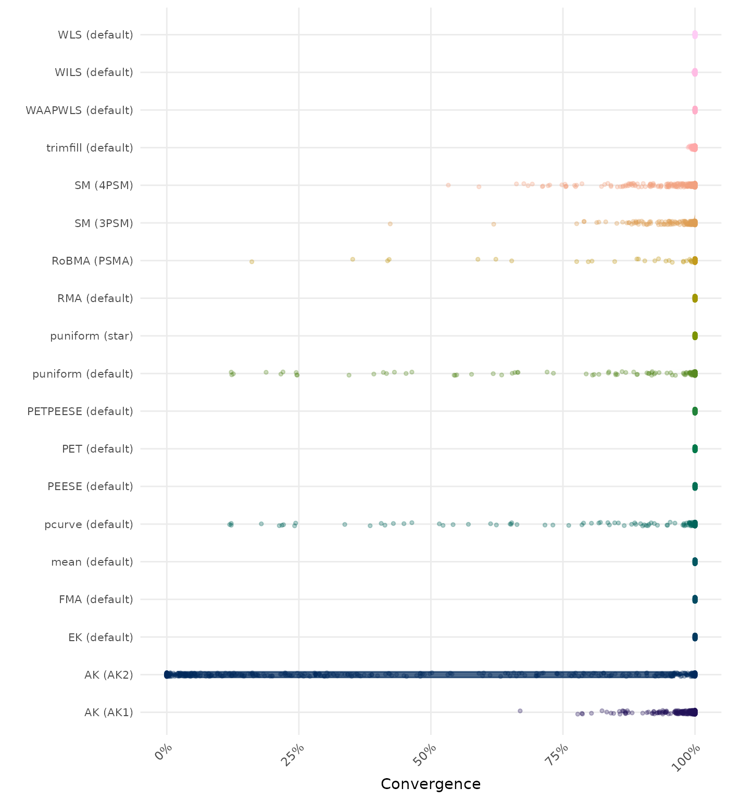
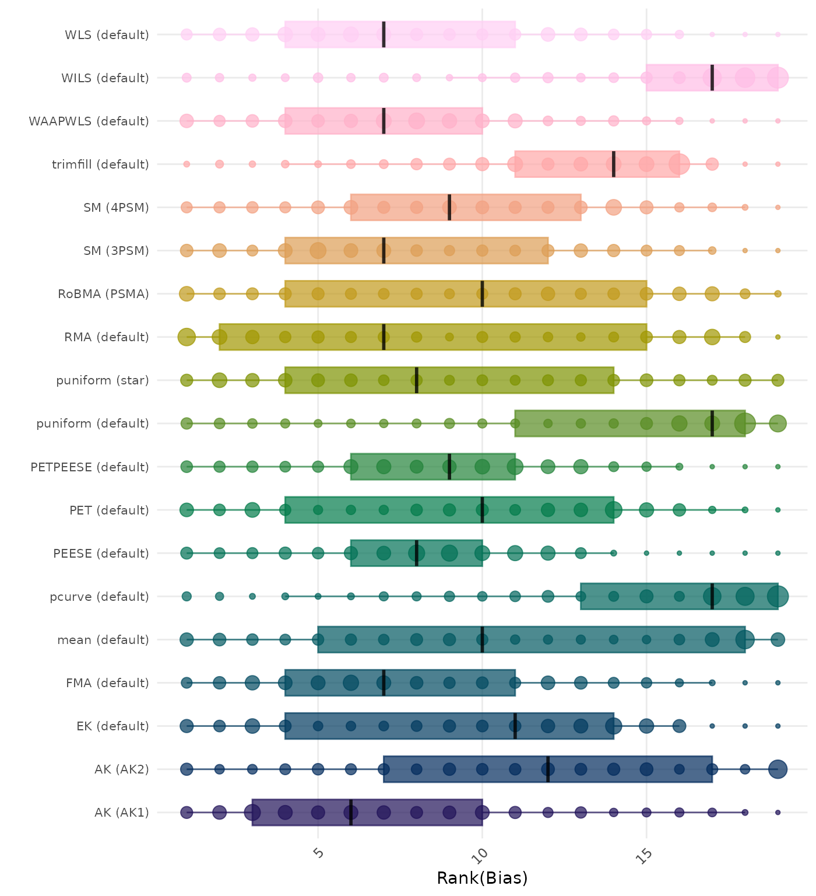

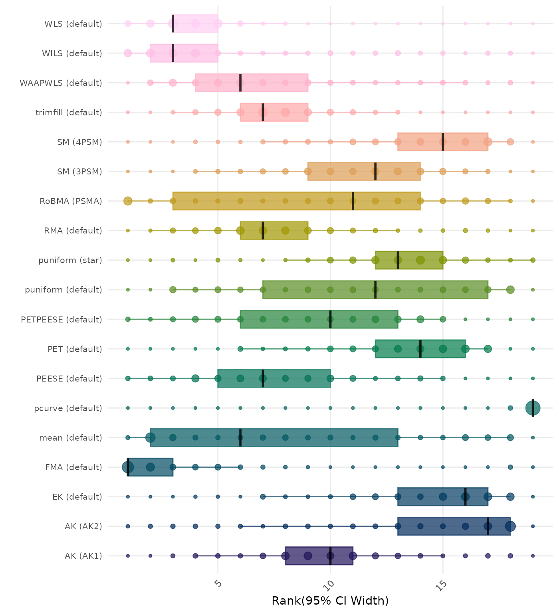
By-Condition Performance (Replacement in Case of Non-Convergence)
The results below incorporate method replacement to handle non-convergence. If a method fails to converge, its results are replaced with the results from a simpler method (e.g., random-effects meta-analysis without publication bias adjustment). This emulates what a data analyst may do in practice in case a method does not converge. However, note that these results do not correspond to “pure” method performance as they might combine multiple different methods. See TODO for details of the method replacement specification.

Methods are compared using condition-wise ranks. Direct comparison using the average bias is not possible because the data generating mechanisms differ in the outcome scale. See the DGM-specific results (or subresults) to see the distribution of bias values on the corresponding outcome scale.

Methods are compared using condition-wise ranks. Direct comparison using the average RMSE is not possible because the data generating mechanisms differ in the outcome scale. See the DGM-specific results (or subresults) to see the distribution of RMSE values on the corresponding outcome scale.
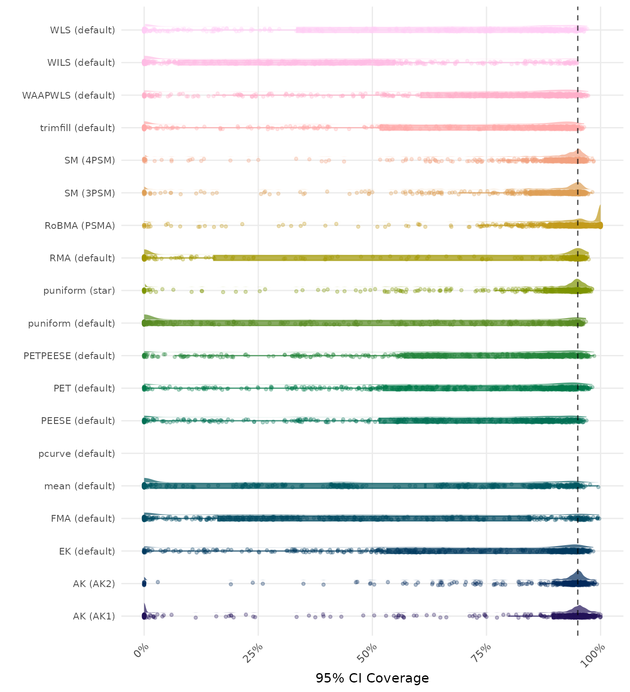

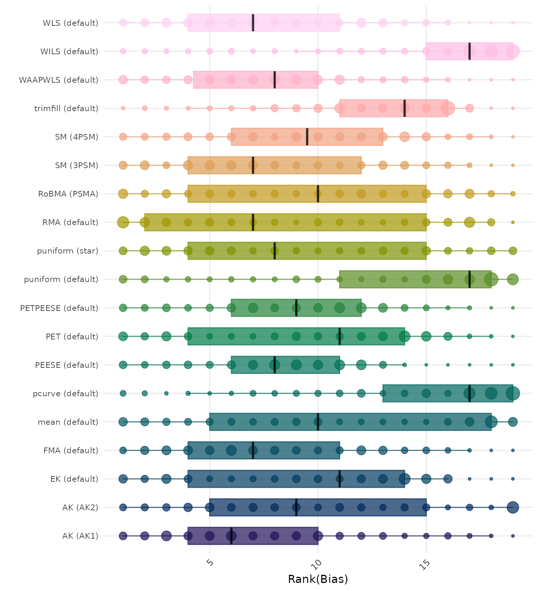


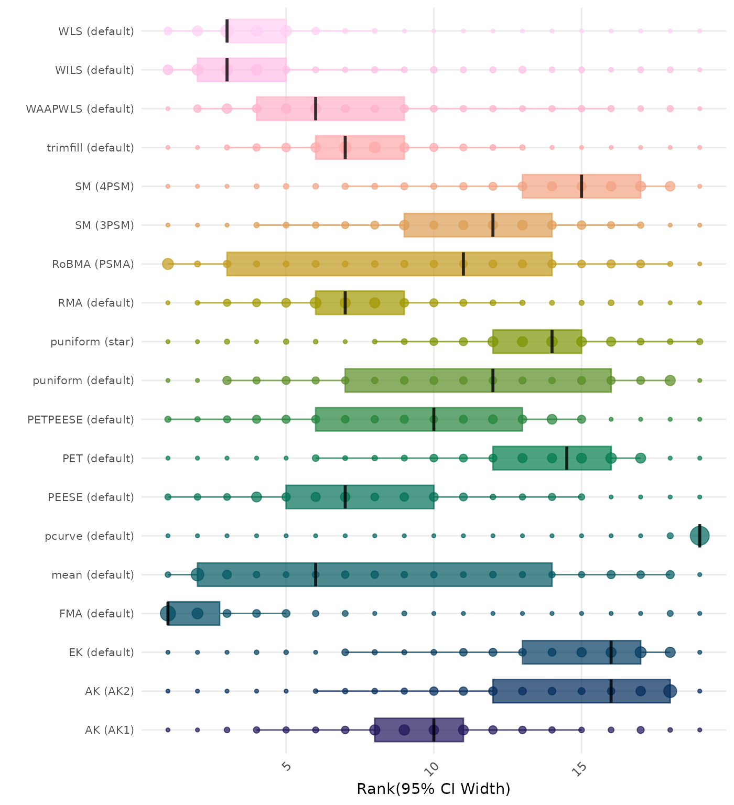
Session Info
This report was compiled on Sun Oct 12 12:11:24 2025 (UTC) using the following computational environment
## R version 4.5.1 (2025-06-13)
## Platform: x86_64-pc-linux-gnu
## Running under: Ubuntu 24.04.3 LTS
##
## Matrix products: default
## BLAS: /usr/lib/x86_64-linux-gnu/openblas-pthread/libblas.so.3
## LAPACK: /usr/lib/x86_64-linux-gnu/openblas-pthread/libopenblasp-r0.3.26.so; LAPACK version 3.12.0
##
## locale:
## [1] LC_CTYPE=C.UTF-8 LC_NUMERIC=C LC_TIME=C.UTF-8
## [4] LC_COLLATE=C.UTF-8 LC_MONETARY=C.UTF-8 LC_MESSAGES=C.UTF-8
## [7] LC_PAPER=C.UTF-8 LC_NAME=C LC_ADDRESS=C
## [10] LC_TELEPHONE=C LC_MEASUREMENT=C.UTF-8 LC_IDENTIFICATION=C
##
## time zone: UTC
## tzcode source: system (glibc)
##
## attached base packages:
## [1] stats graphics grDevices utils datasets methods base
##
## other attached packages:
## [1] scales_1.4.0 ggdist_3.3.3
## [3] ggplot2_4.0.0 PublicationBiasBenchmark_0.1.0
## [5] devtools_2.4.6 usethis_3.2.1
##
## loaded via a namespace (and not attached):
## [1] sass_0.4.10 generics_0.1.4 xml2_1.4.0
## [4] stringi_1.8.7 httpcode_0.3.0 digest_0.6.37
## [7] magrittr_2.0.4 evaluate_1.0.5 grid_4.5.1
## [10] RColorBrewer_1.1-3 pkgload_1.4.1 fastmap_1.2.0
## [13] jsonlite_2.0.0 pkgbuild_1.4.8 sessioninfo_1.2.3
## [16] crul_1.6.0 urltools_1.7.3.1 httr_1.4.7
## [19] purrr_1.1.0 viridisLite_0.4.2 textshaping_1.0.4
## [22] jquerylib_0.1.4 cli_3.6.5 rlang_1.1.6
## [25] triebeard_0.4.1 ellipsis_0.3.2 remotes_2.5.0
## [28] withr_3.0.2 cachem_1.1.0 yaml_2.3.10
## [31] tools_4.5.1 memoise_2.0.1 kableExtra_1.4.0
## [34] curl_7.0.0 vctrs_0.6.5 R6_2.6.1
## [37] lifecycle_1.0.4 stringr_1.5.2 fs_1.6.6
## [40] htmlwidgets_1.6.4 ragg_1.5.0 pkgconfig_2.0.3
## [43] desc_1.4.3 osfr_0.2.9 pkgdown_2.1.3
## [46] bslib_0.9.0 pillar_1.11.1 gtable_0.3.6
## [49] glue_1.8.0 Rcpp_1.1.0 systemfonts_1.3.1
## [52] xfun_0.53 tibble_3.3.0 rstudioapi_0.17.1
## [55] knitr_1.50 farver_2.1.2 htmltools_0.5.8.1
## [58] labeling_0.4.3 svglite_2.2.1 rmarkdown_2.30
## [61] compiler_4.5.1 S7_0.2.0 distributional_0.5.0